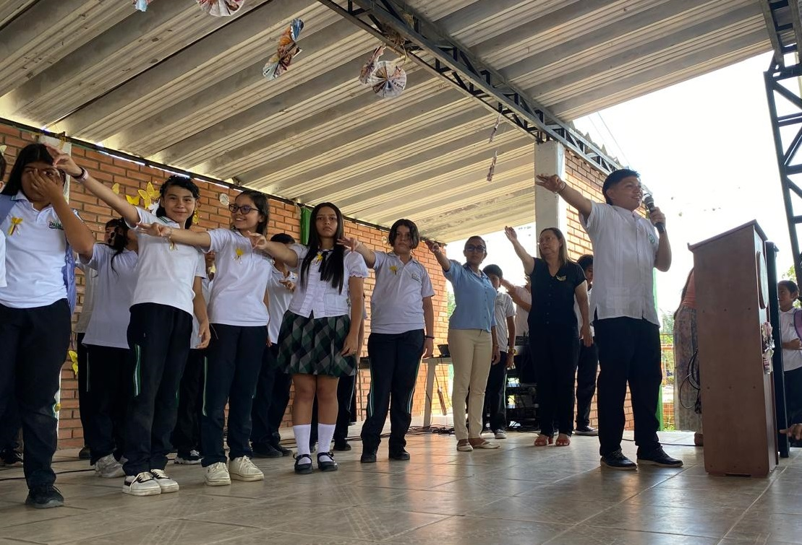
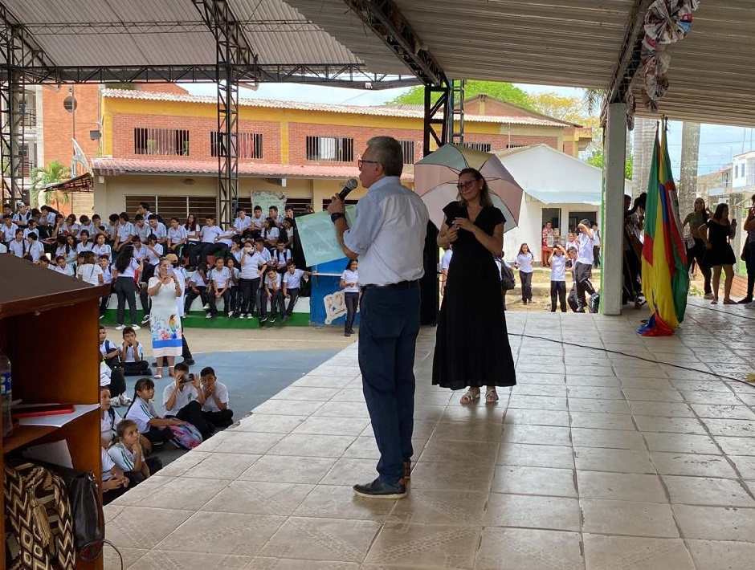
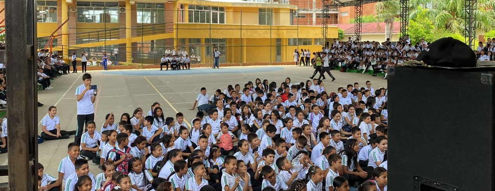

El pasado 23 de abril del año 2024, el Instituto Técnico Industrial El Palmar celebró con entusiasmo el Día del Idioma, una fecha significativa que nos recuerda la riqueza y diversidad de nuestra lengua. Esta celebración destacó la importancia del español. La jornada escolar comenzó con la realización de una actividad creativa y participativa: cada grado, junto con su director de grado, elaboró una cartelera representativa del Día del Idioma.
Día del idioma


Los estudiantes se esforzaron en crear carteleras que capturaran la esencia del día del idioma. Cada cartelera fue un reflejo del compromiso y creatividad de los alumnos, quienes utilizaron citas literarias, imágenes, colores, materiales revocables y pinturas para expresar su amor por el idioma. Luego, cada grupo colocó su cartelera en diferentes puntos estratégicos del colegio, llenando el colegio de ambiente de color y cultura. Posteriormente, todos los estudiantes se dirigieron al coliseo, donde se dio apertura oficial al cronograma de actividades con una ceremonia de izada de bandera. El acto estuvo lleno de emoción y patriotismo, marcando el inicio de una serie de presentaciones culturales que incluyeron coplas, bailes y canciones, entre otras actividades. Los estudiantes mostraron su talento y dedicación, preparando presentaciones que rindieron homenaje al día del idioma.

El evento fue una verdadera fiesta cultural, donde la música y la danza se combinaron para celebrar la diversidad y la riqueza de nuestro idioma. Las coplas, llenas de ingenio y picardía, sacaron sonrisas y aplausos del público, mientras que los bailes tradicionales mostraron la variedad de ritmos. Al final de la jornada, llegó el momento de premiar a los mejores. El jurado, compuesto por profesores, exploraron y miraron cuidadosamente la mejor cartelera y la mejor presentación de baile. Después de una evaluación cuidadosa, se anunció que el grado 11-3 había ganado ambos premios. Su cartelera fue destacada por su creatividad, mientras que su presentación de baile impresionó a todos con su variedad de ritmos y energía. Los estudiantes del 11-3 demostraron un gran compromiso y amor por el idioma, llevándose merecidamente los galardones.